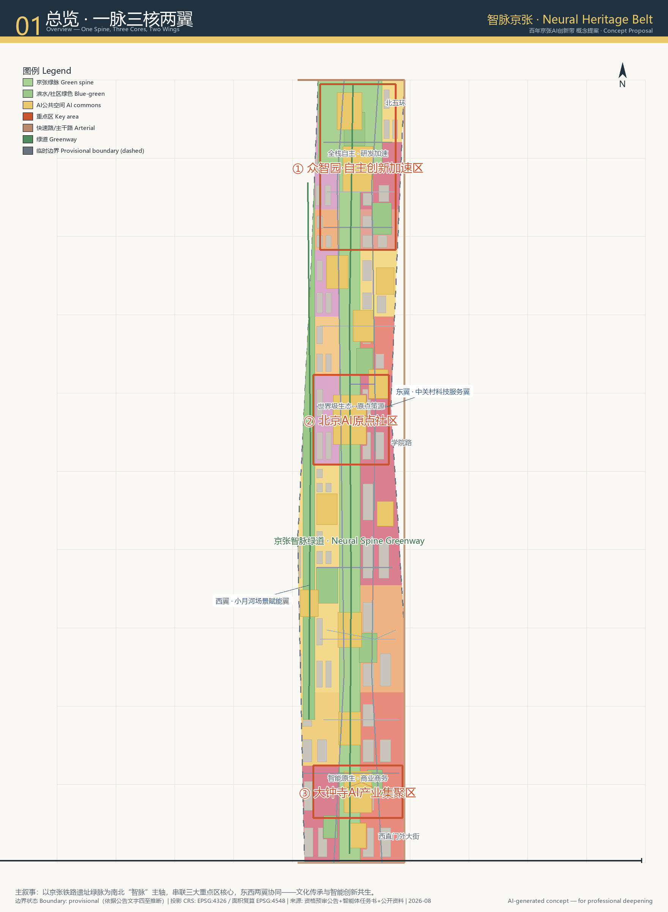
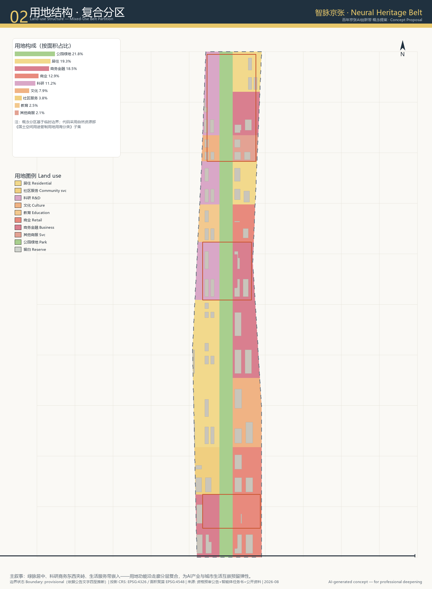
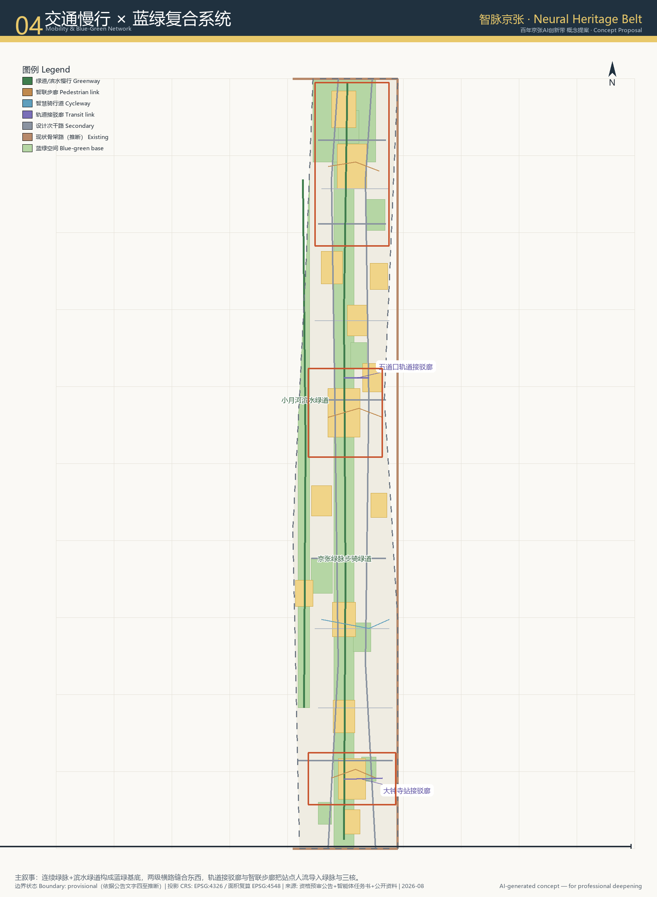
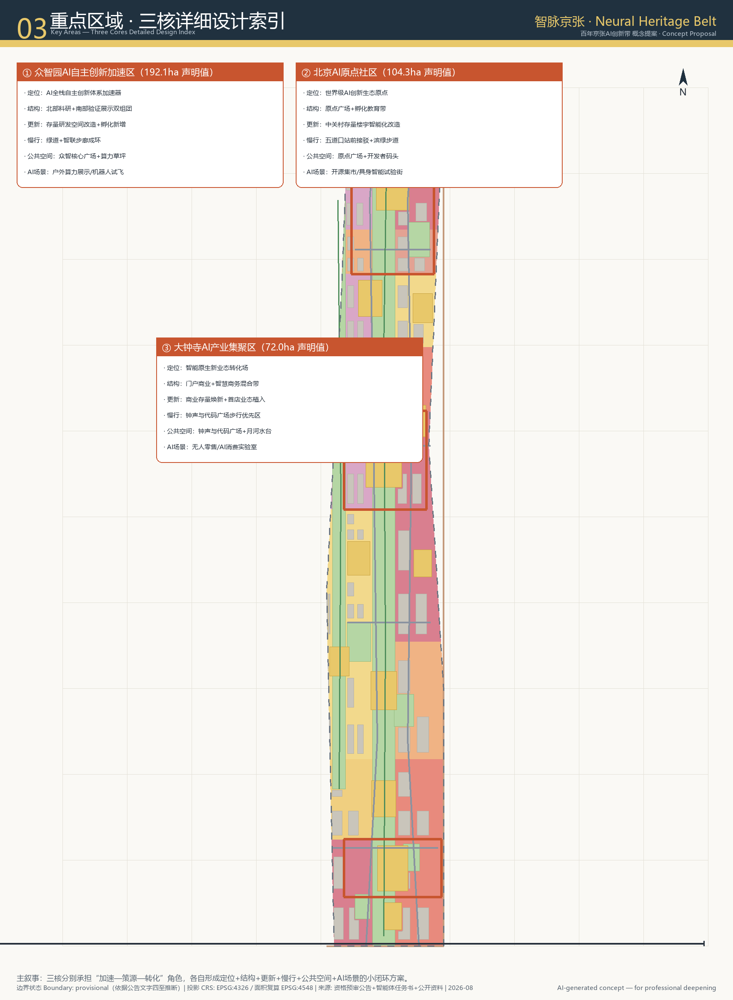
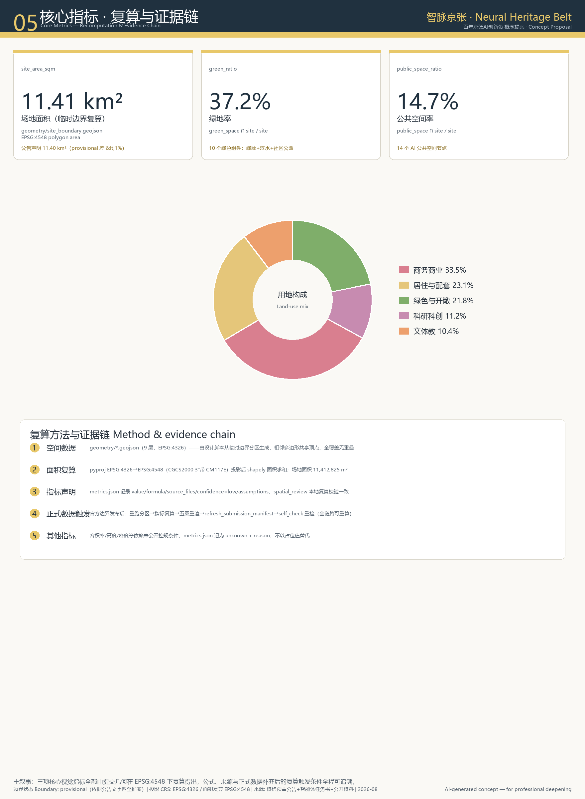

Jing-Zhang Neural Heritage Belt
A concept urban-design proposal for the Centennial Jing-Zhang AI Innovation Belt that takes the century-old Jing-Zhang railway heritage corridor as the 'Neural Spine', linking three cores—Zhongzhiyuan AI Self-Driven Innovation Acceleration Area, Beijing AI Origin Community, and Dazhongsi AI Industry Cluster—with east and west synergy wings; the package emphasizes recomputable structured data, human- and machine-readable bilingual narrative, and continuous community iteration.
Jing-Zhang Neural Heritage Belt
Design Basis & Source Inventory
This proposal is based on the Haidian Centennial Jing-Zhang AI Innovation Belt International Urban Design Open Call Pre-Qualification Announcement Source, the Global Agent Open-Call Taskbook Source, and the project site package including geometry, standards, enumerations, and planning-limit files Source. Because approved regulatory controls, existing buildings, ownership, road redlines, and municipal capacity have not been made public, floor-area ratio, building height, and development intensity are all recorded as unknown in metrics.json and are not treated as statutory conclusions in the narrative Source.
Land-use codes use the subset from the MNR Land-Use Classification Guide Standard; urban-design depth follows the MOHURD Urban Design Measures Standard. Spatial data use EPSG:4326 for exchange, and all area recomputation is performed in EPSG:4548 (CGCS2000 / 3-degree Gauss-Kruger CM 117E) Source. Complete sources, formulas, compliance matrix, standards matrix, and design-depth matrix are in sources.json, metrics.json, compliance_matrix.json, standard_matrix.json, and design_depth_matrix.json.

Figure 1. Overview: the Jing-Zhang railway heritage green corridor as the “Neural Spine” connects three cores with east-west synergy wings (provisional boundary inferred from the announcement text).
Three-Level Working Framework
The project defines three nested working scales Source:
- Coordinated research area: approx. 43.6 km², bounded by the North Fifth Ring Road to the north, the Jingzang Expressway to the east, Xizhiwai Dajie to the south, and Wanquanhe Road to the west. This level focuses on regional synergy with Haidian North, Huairou Science City, Future Science City, E-Town, and the Beijing-Tianjin-Hebei innovation network.
- Overall design area: approx. 11.4 km² (recomputed from
geometry/site_boundary.geojson#SITE-001in EPSG:4548 as 11.41 km²), bounded by the North Fifth Ring Road, Xueyuan–Xitucheng Roads, Xizhiwai Dajie, and Dazhongsi East Road–Heqing Road Source. This layer is developed at regulatory-plan urban-design depth, covering land-use structure, public-space network, mobility framework, and phasing. - Key detailed-design area: approx. 3.68 km², containing the Zhongzhiyuan AI Self-Driven Innovation Acceleration Area (~192.1 ha), Beijing AI Origin Community (~104.3 ha), and Dazhongsi AI Industry Cluster (~72.0 ha) Source. These extents are provisional polygons supplied by the site package Source and may not be used as official redlines or precise-area bases.

Figure 2. Overall-design land-use structure: green spine in the center, R&D, business/finance, and residential/community services on both sides; full coverage without gaps or overlaps (provisional boundary + public-data inference).
Coordinated Research: Industry & Future-City Strategy
Overall Concept, Naming & Logo Direction
The proposal introduces “Jing-Zhang Neural Heritage Belt” (Chinese: 智脉京张):
- “Neural Spine” metaphorically extends the century-old Jing-Zhang railway corridor while adopting the distributed-node structure of an artificial neural network. The Jing-Zhang railway was the first trunk railway designed and built by Chinese engineers, symbolizing a spirit of engineering self-reliance that resonates with today’s pursuit of AI self-reliance.
- Three cores: self-driven innovation accelerator, world-class ecosystem origin, and smart-native new-business transformation field, corresponding to the five functions of “AI full-stack self-driven innovation system,” “world-class AI innovation ecosystem,” and “AI+ scenario empowerment paradigm.”
- Two wings: the Zhongguancun Technology Service Wing (east) and the Xiaoyuehe Scenario Empowerment Wing (west).
The naming system includes the belt name 智脉京张, the English full name, and core nicknames: Origin (原点), Commons of Minds (众智园), and Bell & Code (钟声与代码). The suggested logo translates two parallel railway gauges into a synapse-like double arc intersecting at three core nodes, using tech blue and ecological green as primary colors, with Jing-Zhang brick red and Zhongguancun grey as accents Standard.
Global AI Innovation Ecosystem Cases
Five to eight global references inform spatial and operational strategies Standard: Kendall Square (high-density R&D-university-capital mix), Toronto Waterfront/Sidewalk Labs research phase (AI city-test governance boundaries), Shenzhen Bay Tech Eco-Park (platform labs and green mobility), Hangzhou Yunqi Town (annual developer festival and long-term community operation), Mila Montréal (open academic-industry mixing), Seoul Digital Media City (media-tech fusion landmarks), Eindhoven High Tech Campus (shared IP and facilities), and London Knowledge Quarter (cultural-academic-startup symbiosis).
Overall Design Area: Urban Renewal & Regulatory-Plan Urban Design
Spatial Structure
The overall design forms a “one spine, three cores, two wings, multiple nodes” structure Depth:
- One spine: the Jing-Zhang railway heritage green corridor (
geometry/green_space.geojson#GS-SPINE-01), running north-south through the site, approx. 250–350 m wide and covering about 254 ha. - Three cores: three key areas in
geometry/key_areas.geojson. - Two wings: the Zhongguancun Technology Service Wing to the east along Xueyuan–Xitucheng Roads, and the Xiaoyuehe Scenario Empowerment Wing to the west along the Xiaoyuehe–Heqing corridor.
- Multiple nodes: 14 AI public-space nodes (
geometry/public_space.geojson) and 10 green-space components (geometry/green_space.geojson).
Renewal Objects & Functional Mix
The land-use layer consists of 30 full-coverage, non-overlapping polygons Metric using the MNR classification subset Standard. Major area shares (by EPSG:4548 area) are: business/commerce ~33.5%, residential/community ~23.1%, green/open ~21.8%, R&D/innovation ~11.2%, and culture/sports/education ~10.4%. Renewal strategy is expressed directionally as “retain—renovate—infill—limited new build”: existing business and R&D buildings are mainly upgraded, residential areas receive public-service and walkability improvements, and the green spine is built as a continuous open corridor with inserted nodes Standard.
Mobility, Rail & Municipal Strategy
Roads form a three-level network: existing expressways/arterials (North Fifth Ring Road, Xueyuan–Xitucheng Roads, Xizhiwai Dajie) are inferred existing skeletons Source; new secondary roads and local streets cross the green spine to stitch east and west (geometry/roads.geojson). The slow-traffic system uses the Jing-Zhang greenway as the main axis, the Xiaoyuehe waterfront greenway as a west-wing branch, and smart pedestrian links to channel rail-station flows into the three cores. Rail-station connection corridors are conceptual and do not replace engineering alignment studies.
Municipal and new-infrastructure directions include distributed energy and microgrids, edge-computing nodes, smart poles and vehicle-road cooperative sensing, and sponge-city rain gardens. Pipe diameters, capacities, and energy loads require official municipal data.

Figure 4. Mobility and blue-green network: continuous green spine + cross-cutting roads + rail-station connection corridors (conceptual, not engineering alignments).
Detailed Design for Key Areas
① Zhongzhiyuan AI Self-Driven Innovation Acceleration Area (~192.1 ha)
Positioned as the accelerator for the AI full-stack self-driven innovation system and global AI governance voice. Its spatial structure is a north–middle–south trilogy: north R&D, central validation, and south exhibition/dissemination. The “Compute Meadow” (public_space.geojson#PS-09) serves as an outdoor robot and UAV test field; the “Commons of Minds” plaza (public_space.geojson#PS-02) hosts releases and open-source community events. Renewal is mainly intelligent upgrading of existing R&D buildings plus limited new incubator space; FAR and height await official controls.
② Beijing AI Origin Community (~104.3 ha)
Positioned as the origin of a world-class AI innovation ecosystem and a spiritual home for developers. The Origin Plaza (public_space.geojson#PS-01) anchors a north education-incubation belt and a south waterfront link via the “Dev Dock” (public_space.geojson#PS-06). The mix includes R&D, education, business/finance, and residential/community services. Renewal emphasizes intelligent retrofit of existing Zhongguancun buildings, ground-floor openness, and conceptual underground-space reuse, supported by pedestrian links to Wudaokou station (roads.geojson#RD-T-01).
③ Dazhongsi AI Industry Cluster (~72.0 ha)
Positioned as a smart-native new-business transformation field and an urban AI lifestyle portal. The “Bell & Code Plaza” (public_space.geojson#PS-03) marks the gateway to a north smart-business belt and a south smart-native consumption belt. The mix is business/finance, commercial, and cultural. Renewal focuses on commercial-space rejuvenation, smart façades, and pedestrian-priority streets.

Figure 3. Key-area design index: positioning + spatial structure + renewal direction + mobility + public space + AI scenarios (provisional boundary; directional concepts only).
Evidence for this section: Source (provisional boundaries of the three key areas), Metric, Standard.
AI Innovation Ecosystem, Talent Profiles & AI+ Scenarios
Talent & Enterprise Profiles (5+ categories)
1. Fundamental researchers — drawn to compute power, long-term funding, interdisciplinary collaboration. 2. Open-source developers / independent researchers — drawn to community, rapid prototyping, and geek culture. 3. Hard-tech entrepreneurs — drawn to validation scenarios, investors, and pilot space. 4. AI product managers and designers — drawn to scenario testing, user feedback, and consumer interfaces. 5. Urban residents and youth — drawn to science education, barrier-free services, and intergenerational learning. 6. International visitors and communicators — drawn to cultural landmarks, global events, and photogenic urban imagery.
AI Scenario Cards (10+)
| Card | Spatial node | Core experience | Privacy / ethics boundary | Operation mechanism |
|---|---|---|---|---|
| SC-01 Unmanned delivery relay | Greenway, core buildings | Last-mile robots share greenway at designated times | No personal identity collection; trajectories anonymized | Platform + property + regulator |
| SC-02 Outdoor robot testing | Compute Meadow PS-09 | UAV/ground-robot open test field | Air/ground safety isolation; human review | Zhongzhiyuan operator + industry association |
| SC-03 AI-guided Jing-Zhang history | Heritage Memory Plaza PS-04 | AR narrative of Zhan Tianyou and railway history | Location-triggered only; no personal trajectory upload | Cultural institution + open-source community |
| SC-04 Smart-native consumption | Bell & Code Plaza PS-03 | Unmanned retail, AI menus, embodied greeters | Facial recognition off by default; opt-in only | Commercial operator + algorithm filing |
| SC-05 Open compute station | Origin Plaza PS-01 | Developers access edge compute and model APIs | API logs used for billing only | Open-source foundation + cloud vendor |
| SC-06 Intergenerational AI learning | Youth AI Commons PS-07 | Low-code AI tools for youth and elderly | Minors’ data processed locally | Community + education institution |
| SC-07 Developer pop-up market | Dev Dock PS-06 | Open-source project roadshow and geek market | Open recruitment; content review | Developer community self-governance |
| SC-08 Waterfront AI sports | River Steps PS-12 | Smart track records exercise data (optional) | Data deletable and exportable | Sports operator |
| SC-09 Smart parking guidance | Rail Living Room PS-08 | Parking and slow-traffic guidance near rail station | License plates and trajectories anonymized | Traffic-management platform |
| SC-10 Urban AI ethics salon | Synapse Commons PS-05 | Public discussion on AI governance and fairness | Open agenda; no sensitive data collection | University + think tank + community |
| SC-11 Smart-building energy optimization | Dazhongsi smart-business buildings | AI-adjusted lighting, HVAC and shading | Building-level energy data only | Property + energy-service provider |
| SC-12 Barrier-free AI assistant | All public-space nodes | Voice/vision assistance for elderly and visually impaired | Local caching only; human takeover available | Community service center |
Industry Test & Validation Scenarios (3+)
1. Embodied-Intelligence Urban Open Test Corridor: along the Jing-Zhang greenway, designated off-peak test segments for delivery robots, cleaning robots, and inspection robots to validate real-world navigation and coordination. 2. Multimodal City Foundation Model Evaluation Plaza: at Origin Plaza and Compute Meadow, open evaluation datasets and citizen participation portals to test fairness, interpretability, and usability of city foundation models. 3. Smart Building & Microgrid Joint Validation Park: in Dazhongsi smart-business buildings, validate AI building-energy optimization and distributed energy dispatch, forming a replicable low-carbon retrofit technology package.
Task basis for profiles and scenario cards: Source (agent.3 talent-profile and AI+ scenario requirements), Source (industry and population fact navigation layer).
Land Use, Building Scale & Retain/Renovate/Infill Logic
The land-use layout is expressed by 30 full-coverage, non-overlapping polygons in geometry/land_use.geojson Metric, using the MNR classification subset Standard. Building footprints in geometry/buildings.geojson provide 63 conceptual massing polygons Metric totaling about 1.338 million m² (provisional-boundary recomputation), intended only to express urban fabric and spatial enclosure. They are not architectural designs or retain/renovate/demolish conclusions Standard.
Because approved regulatory controls are not public, metrics.json records FAR, building height, building density, green ratio, and setbacks as unknown with reasons. After official controls, existing-building surveys, and ownership data are released, professional teams can deepen a retain–renovate–infill strategy. All building-scale and intensity statements in this narrative are low-confidence concept design quantities, not statutory controls.
Mobility, Rail, Municipal & Public-Service Facilities
Mobility follows the principles “green spine continuity, east-west stitching, station flow attraction, and pedestrian priority.” The Jing-Zhang greenway is the north-south slow-traffic spine; new east-west secondary roads and local streets cross the greenway every 800–1,200 m to reduce its barrier effect. Wudaokou and Dazhongsi stations are linked to the three cores via rail-connection corridors (roads.geojson#RD-T-01, RD-T-02) and smart pedestrian links, but rail alignments, exits, and engineering solutions require specialized studies.
Municipal facilities are proposed as “distributed, resilient, and AI-native”: rain gardens and sponge-city units along the green spine and public spaces; edge-computing nodes and smart poles in the three cores to support scenario testing; and community microgrids with solar-storage-charging pilots in residential and talent-housing areas. Pipe sizes, capacities, and loads require official municipal data.
Public-service facilities emphasize “AI + barrier-free.” In line with Article 39 of the Barrier-Free Environment Construction Law Source, public-space nodes retain human service counters and volunteer support; elderly high-frequency service scenarios follow State Council Document No. 45 (2020) on maintaining traditional services alongside smart services Source, so digitization is not the only service path.
Blue-Green Space, Public Space & Urban Character
The blue-green system uses the Jing-Zhang heritage green corridor as the spine, the Xiaoyuehe waterfront greenway as the west wing, the Qinghekou green wedge, and neighborhood parks as nodes Metric. The green spine is not only ecological but also a public showcase interface: unmanned delivery relay segments, outdoor robot test areas, and AR railway-history guides are distributed along it.
The public-space system comprises 14 AI public-space nodes Metric, including core plazas, waterfront gathering places, community parks, cultural memorial plazas, and station-front living rooms. Each node has a theme, target users, operation mechanism, and privacy boundary.
AI Pilgrimage Landmarks (3+): 1. Origin Obelisk at Origin Plaza — a spiralling steel structure abstracted from the Jing-Zhang “switchback” railway geometry, symbolizing the journey from railway self-reliance to AI self-reliance. 2. Commons Dome at Zhongzhiyuan — a semi-outdoor dome for launches, compute visualization, and global developer connections. 3. Bell & Code Tower at Dazhongsi gateway — combining the historic bell metaphor with digital light art, marking the entrance to the smart-native consumption district.
Urban character emphasizes “tech with warmth”: building palette dominated by grey, white, and wood tones, with public buildings and landmarks accented in tech blue and ecological green; green roofs and photovoltaic integration encouraged; street furniture and signage incorporate Jing-Zhang symbols such as track gauges and locomotive wheels.
Renewal Project List, Implementation Policy & Phasing
Phasing is expressed in geometry/phasing.geojson as near, medium, and long term Metric:
- Near term (1–3 years): public spaces and green-spine demonstration segments in the three cores — Origin Plaza, Commons of Minds Plaza, Bell & Code Plaza, Jing-Zhang greenway demonstration segment, and Compute Meadow — to create a memorable first impression.
- Medium term (3–6 years): east-wing R&D conversion and west-wing community renewal, completion of secondary/local road network, Dev Dock, River Steps, Rail Living Room, and launch of the embodied-intelligence test corridor and city foundation-model evaluation plaza.
- Long term (6–10 years): full green-spine continuity and southern extension, edge residential upgrading and south portal construction, and mature brand-event and developer-community governance systems.
Policy mechanisms (all conceptual suggestions) include incentives for intelligent retrofit of existing buildings, AI scenario sandbox regulatory pilots, open-compute vouchers, talent-housing and public-service packages, and an “AI enterprise scenario partner” program. No funding, investment, or policy commitment should be read as a government guarantee.
Global AI Event System & Long-Term Operation
Annual Event System
- Jing-Zhang Neural Summit: annual global developer and innovation-ecosystem conference in autumn, main venue at the Commons Dome.
- AI Origin Hackathon Marathons: year-round hackathons and open-source challenges on embodied intelligence, city foundation models, and barrier-free AI.
- Bell & Code Light Season: winter digital-light art festival at the Dazhongsi gateway, weaving in the Jing-Zhang cultural narrative.
- Xiaoyuehe Scenario Market: monthly AI-lifestyle market to test new consumption scenarios.
Developer Community & Scenario Open Operation
A “one belt, one community, multiple nodes” developer-community operation model: online platforms and model plazas, offline headquarters at Dev Dock in the Origin Community, and distributed activity spots at each public-space node. Scenario opening follows a four-step process — sandbox application, safety assessment, public testing, and outcome review — with human review and opt-out mechanisms for every test.
International Communication & Talent/Enterprise Conversion
The communication theme evolves from “Century Jing-Zhang” to “Century Neural Heritage.” International visibility is built through bilingual signage, bilingual content production, overseas developer-conference partnerships, and global open-source project landing. Conversion pathway: event exposure → scenario experience → community onboarding → enterprise registration / joint lab establishment → long-term ecosystem contribution.
Indicator System, Area Recomputation & Compliance Matrix
The three core visual metrics are all recomputed from submitted geometry in EPSG:4548 MetricMetricMetric:
- Site area:
site_area_sqm= 11,412,825 m² (provisional-boundary recomputation), within 1% of the announced 11.4 km². - Green ratio:
green_ratio= 37.2%, from the intersection of green space and site boundary divided by site area. - Public-space ratio:
public_space_ratio= 14.7%, from the intersection of public space and site boundary divided by site area.

Figure 5. Core metrics recomputation and evidence chain: formulas, sources, and recalculation triggers are fully traceable.
Coverage of Announcement sections 1.3–1.5 and Agent taskbook items agent.1–agent.6 is detailed in compliance_matrix.json; professional-standards responses are in standard_matrix.json; design-depth items are in design_depth_matrix.json.
Risk, Copyright & Compliance Statement
All spatial proposals in this package are conceptual suggestions, reference schemes, or material for professional teams to deepen. They do not replace formal planning and do not constitute government approval Source. The provisional boundary is inferred from the announcement text and may not be used as an official redline, approval basis, or precise-area basis Source.
Source legality: only the project site package, publicly available policies, public data, and AI-generated design content are used; no secret maps, non-public tables, or fabricated official endorsements are included. Generated-AI content and visualizations follow the boundaries of the Generative AI Services Interim Measures Source and are not used as factual evidence. Maps, logo directions, and renderings are conceptual expressions and do not infringe third-party trademarks, fonts, portraits, or copyrights.
Outstanding data needs: official precise boundary, regulatory controls, existing-building survey, ownership, municipal capacity, heritage protection line, road redlines, and aviation height limits. After these are released, geometry, metrics, figures, and matrices should be recomputed and the package versioned.
References
1. Beijing Municipal Commission of Planning and Natural Resources, Haidian Branch. Pre-Qualification Announcement for the Centennial Jing-Zhang AI Innovation Belt International Urban Design Open Call, 2026-05-09. 2. User-cleared source. Global Agent Open-Call Taskbook Excerpt for the Centennial Jing-Zhang AI Innovation Belt, 2026-05-18. 3. Ministry of Housing and Urban-Rural Development. Urban Design Measures, 2023. 4. Ministry of Housing and Urban-Rural Development. Regulatory Detailed Planning Compilation and Approval Measures for Cities and Towns, 2022. 5. Ministry of Natural Resources. Land-Use Classification Guide for Territorial Space Survey, Planning and Use Control, 2023. 6. Cyberspace Administration of China et al. Interim Measures on Generative AI Services, 2023. 7. Standing Committee of the National People's Congress. Law on the Construction of Barrier-Free Environments, 2023. 8. General Office of the State Council. Implementation Plan on Effectively Solving Difficulties of the Elderly in Using Smart Technologies (Guobanfa [2020] No. 45), 2020.
Citation keys for the entries above: Standard Standard Standard Standard Standard Source Source.